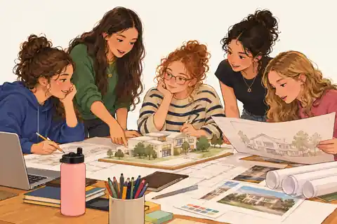

ARCHITECTURE
An hour with an architect
Look at sketches and a model. Hear how a building moves from idea to reality—over coffee or in a studio.
See this example
THE JEWISH MUTUAL · A GROWING JEWISH NETWORK
Meet Jewish professionals, ask questions, see how they work, and try something yourself.
We’re building the network to make these experiences possible.
Launching with women-focused opportunities; welcoming all Jewish young adults. Experiences are being developed.

Ideas become clearer when you try them together.
EXAMPLE EXPERIENCES
It doesn't always take a workplace visit. These are possibilities we're developing.
Look at sketches and a model. Hear how a building moves from idea to reality—over coffee or in a studio.
See this exampleWatch an engineer demonstrate a design, then try solving a small problem together.
See this exampleExplore a property listing, business plan or pricing problem with someone who does it professionally.
See this exampleAsk a healthcare professional about training, everyday work and the decisions they make.
See this exampleOther possibilities include portfolio feedback, workshops, career conversations and job shadowing where permitted.
More example ideasIllustrative examples only. No specific mentors, visits, programs or placements have been confirmed.
START WITH YOUR CURIOSITY
Pick one or several fields. This helps us learn which professionals and experiences to build the network around.
No commitment. No confirmed placements.
You can select more than one.